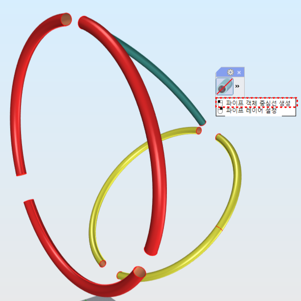
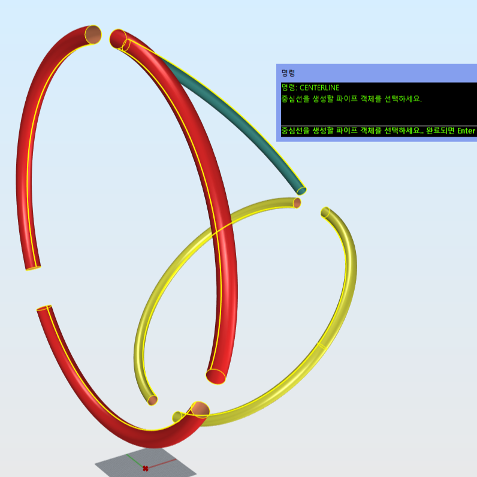
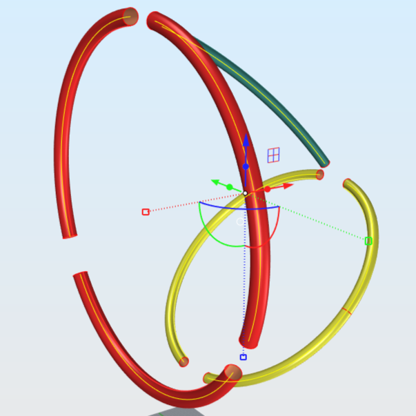
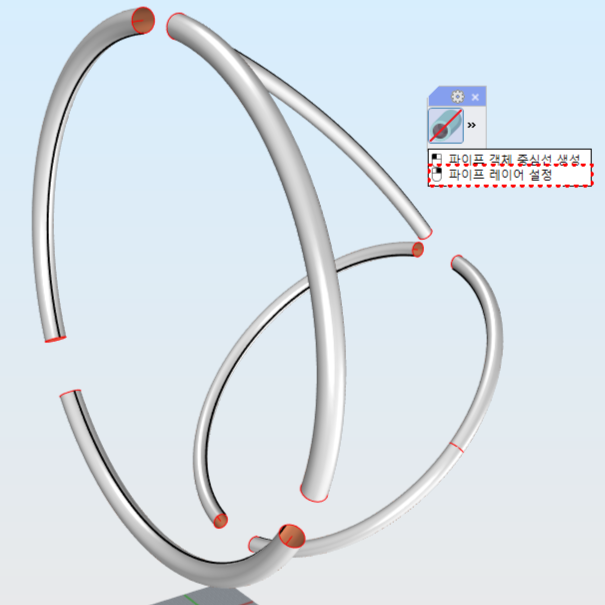
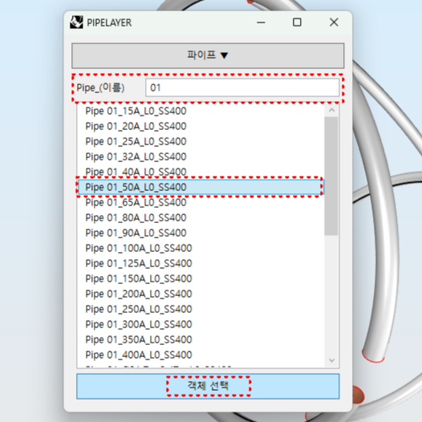
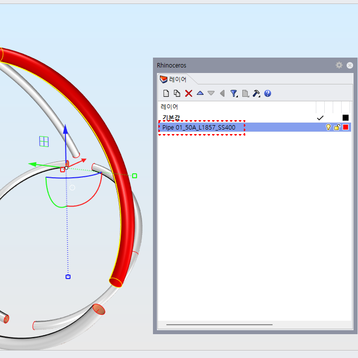

CenterLine
CenterLine :
파이프 객체의 중심선을 자동으로 생성합니다.
PipeLayer :
중심선 정보를 이용해 길이값이 반영된 파이프 레이어를 적용합니다.
Steps (CenterLine)
CenterLine 명령 실행
중심선을 생성할 파이프 객체 선택
생성된 중심선 확인
  
Steps (PipeLayer)
PipeLayer 명령 실행
레이어 이름과 규격 설정 후 파이프 객체 선택
적용할 객체 선택 버튼 클릭
파이프 객체의 중심선 길이를 기준으로 레이어 생성
  
Note
비정형 형상이나 불완전한 파이프 객체의 경우 중심선 생성이 제한될 수 있습니다.
레이어에 적용되는 길이 값은 중심선 길이를 기준으로 계산됩니다.